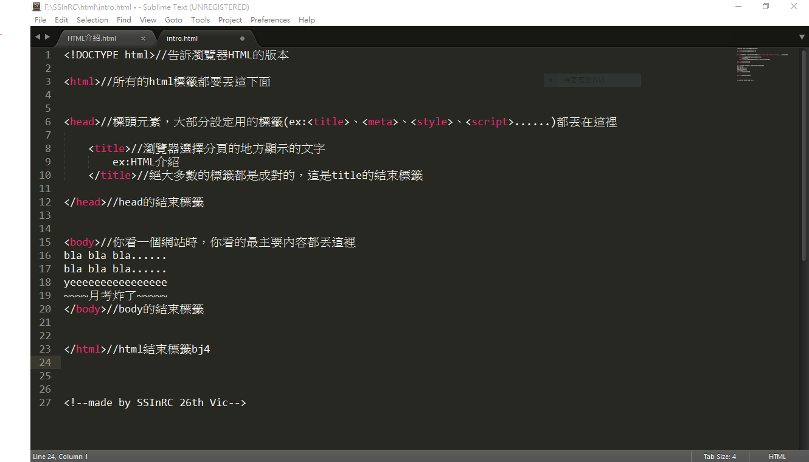

做網頁的三種方法
- Dreamweaver
- 使用模板，見[用模板做的網頁]
- HTML+CSS+JavaScript
html做網頁的方法
基礎架構
常用的重要基礎標籤
| 標籤 | 說明 |
|---|---|
| a | 超連結，常加入href屬性以指定連結位址 |
| p | 分段落用，即p標籤內的文字會自成一段，與上下段文字不處同一行 |
| br | 換行，瀏覽器無法讀出enter跟tab，所以需要讓文句換行時必須使用之瀏覽器才會正確換行 *特別注意，br標籤不成對，即< br/ > |
| pre | 讓文章完整的輸入，即在pre標籤內，瀏覽器可以識別出enter、tab |
| hr | 分隔線 *特別注意，hr標籤不成對，即< hr/ > |
| hn (n為1~6) |
標題文字，數字越大，字體越小 |